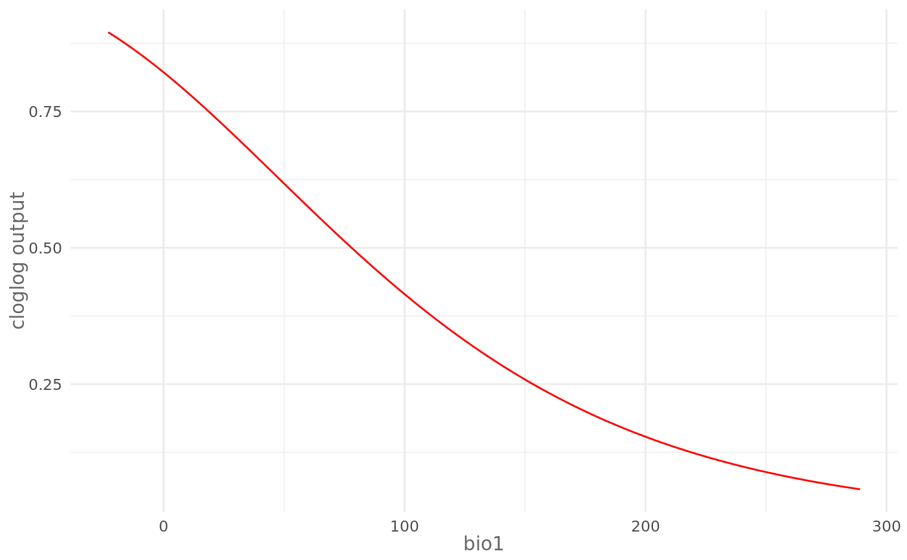
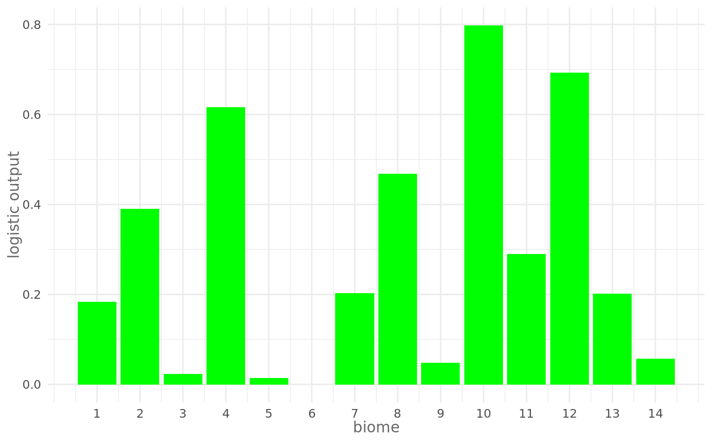
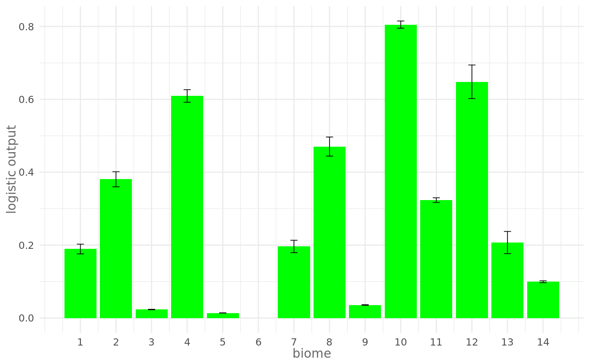
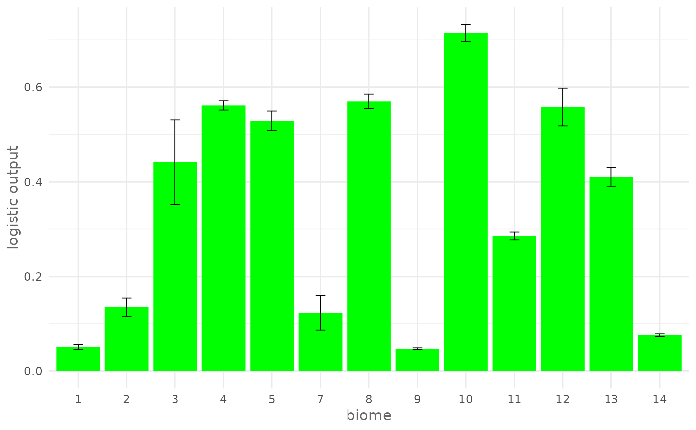

Plot the Response Curve of the given environmental variable.
Usage
plotResponse(
model,
var,
type = NULL,
only_presence = FALSE,
marginal = FALSE,
fun = mean,
rug = FALSE,
color = "red"
)Arguments
- model
SDMmodel or SDMmodelCV object.
- var
character. Name of the variable to be plotted.
- type
character. The output type used for "Maxent" and "Maxnet" methods, possible values are "cloglog" and "logistic".
- only_presence
logical. If
TRUEit uses only the presence locations when applying the function for the marginal response.- marginal
logical. If
TRUEit plots the marginal response curve.- fun
function used to compute the level of the other variables for marginal curves.
- rug
logical. If
TRUEit adds the rug plot for the presence and absence/background locations, available only for continuous variables.- color
The color of the curve, default is "red".
Value
A ggplot object.
Details
Note that
funis not a character argument, you must usemeanand not"mean".If you want to modify the plot, first you have to assign the output of the function to a variable, and then you have two options:
Modify the
ggplotobject by editing the theme or adding additional elementsGet the data with
ggplot2::ggplot_build()and then build your own plot (see examples)
Examples
# Acquire environmental variables
files <- list.files(path = file.path(system.file(package = "dismo"), "ex"),
pattern = "grd",
full.names = TRUE)
predictors <- terra::rast(files)
# Prepare presence and background locations
p_coords <- virtualSp$presence
bg_coords <- virtualSp$background
# Create SWD object
data <- prepareSWD(species = "Virtual species",
p = p_coords,
a = bg_coords,
env = predictors,
categorical = "biome")
#> ℹ Extracting predictor information for presence locations
#> ✔ Extracting predictor information for presence locations [39ms]
#>
#> ℹ Extracting predictor information for absence/background locations
#> ✔ Extracting predictor information for absence/background locations [66ms]
#>
# Train a model
model <- train(method = "Maxnet",
data = data,
fc = "lq")
# Plot cloglog response curve for a continuous environmental variable (bio1)
plotResponse(model,
var = "bio1",
type = "cloglog")

# Plot marginal cloglog response curve for a continuous environmental
# variable (bio1)
plotResponse(model,
var = "bio1",
type = "cloglog",
marginal = TRUE)

# Plot logistic response curve for a continuous environmental variable
# (bio12) adding the rugs and giving a custom color
plotResponse(model,
var = "bio12",
type = "logistic",
rug = TRUE,
color = "blue")

# Plot response curve for a categorical environmental variable (biome) giving
# a custom color
plotResponse(model,
var = "biome",
type = "logistic",
color = "green")

# Modify plot
# Change y axes limits
my_plot <- plotResponse(model,
var = "bio1",
type = "cloglog")
my_plot +
ggplot2::scale_y_continuous(limits = c(0, 1))

# Get the data and create your own plot:
df <- ggplot2::ggplot_build(my_plot)$data[[1]]
plot(df$x, df$y,
type = "l",
lwd = 3,
col = "blue",
xlab = "bio1",
ylab = "cloglog output")

# Train a model with cross validation
folds <- randomFolds(data,
k = 4,
only_presence = TRUE)
model <- train(method = "Maxnet",
data = data,
fc = "lq",
folds = folds)
# Plot cloglog response curve for a continuous environmental variable (bio17)
plotResponse(model,
var = "bio1",
type = "cloglog")
 # Plot logistic response curve for a categorical environmental variable
# (biome) giving a custom color
plotResponse(model,
var = "biome",
type = "logistic",
color = "green")
# Plot logistic response curve for a categorical environmental variable
# (biome) giving a custom color
plotResponse(model,
var = "biome",
type = "logistic",
color = "green")